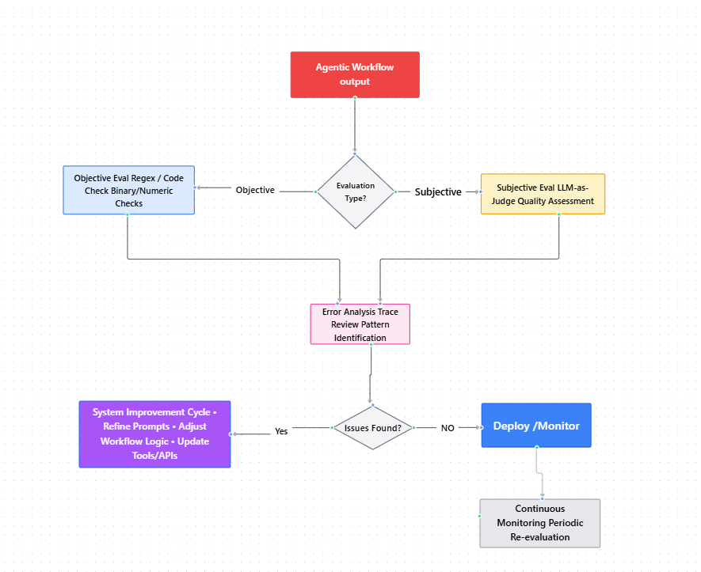
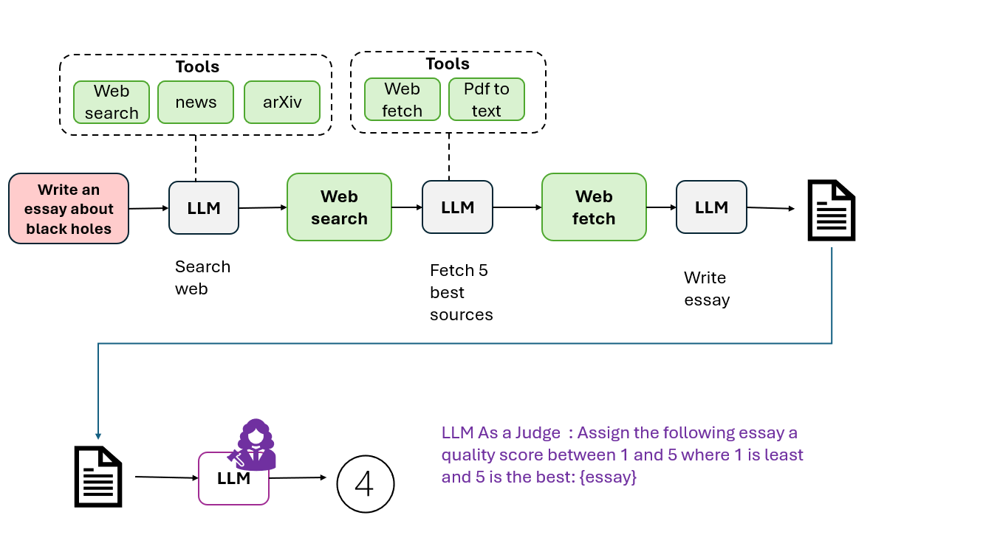

Module 1 — Episode 6
Training:Agentic AI Training
🎯 Learning Objectives
By the end of this episode, you will be able to:
- ✅ Identify the purpose and importance of evaluation (evals) in agentic AI workflows
- ✅ Implement both objective and subjective evaluation metrics for LLM-based systems
- ✅ Apply error analysis techniques to improve agentic workflow performance
🧭 Overview
This episode introduces the concept of evaluations (evals) in the context of agentic AI workflows.
You’ll learn why systematic evaluation is critical for improving agent performance and reliability.
The episode covers practical examples of how to measure system quality using both automated metrics and LLM-as-a-judge techniques, setting the foundation for more advanced evaluation frameworks later in the training.
🧱 Prerequisites
Readers should already understand:
- The basics of agentic workflows and LLM-driven automation
- Familiarity with Python scripting for text processing and analysis
- Concepts introduced in earlier episodes on workflow construction
🔑 Core Concepts
- Eval (Evaluation): A structured process for measuring how well an agentic system performs relative to desired behaviors.
- Objective Metric: A measurable, binary or numeric criterion (e.g., “Did the output mention a competitor?”).
- Subjective Metric: A qualitative judgment often requiring human or LLM interpretation (e.g., “How good is this essay?”).
- LLM-as-a-Judge: A method where another large language model evaluates output quality based on a scoring prompt.
- Error Analysis: Systematically reviewing intermediate outputs or traces to identify where the workflow falls short.
🖼 Visual Explanation
Evaluation Loop Flowchart:  Flowchart Overview:1. Agentic Workflow Output → Initial agent response/result
2. Evaluation Type → Route to objective and/or subjective evaluation
3. Objective Eval → Regex/code checks for rule-based validation (blue)
4. Subjective Eval → LLM-as-judge for quality assessment (yellow)
5. Error Analysis → Trace review and pattern identification (pink)
6. Issues Found? → Decision point for next steps
7. System Improvement Cycle → Refine prompts, adjust logic, update tools (green)
8. Deploy/Monitor → Production deployment if no issues
9. Continuous Monitoring → Periodic re-evaluation loop
Caption:This flowchart illustrates the continuous evaluation loop for agentic workflows. The system routes outputs to either objective evaluation (rule-based checks), subjective evaluation (LLM-as-judge quality assessment), or both. Both evaluation types feed into error analysis and trace review. Based on findings, the system either enters an improvement cycle or deploys with continuous monitoring. This iterative feedback loop ensures measurable improvements in agent performance over time.
⚙️ Technical Breakdown
How It Works
1. Build the Agentic Workflow:For example, a customer service agent responding to order inquiries.
2. Observe Real Outputs:Review responses manually to identify undesired patterns (e.g., competitor mentions).
3. Define Objective Evals:Write code to detect and quantify specific issues.
Example: Count how often competitor names appear in generated responses.
4. Define Subjective Evals:Use an LLM as a judge to rate qualitative aspects like tone, helpfulness, or accuracy.
 5. Track Progress:As you refine your workflow, monitor eval metrics to ensure measurable improvement.
Why It Works
- Evaluation transforms subjective intuition into quantifiable feedback loops.
- Objective metrics help catch systematic, rule-based errors.
- Subjective evals allow you to assess creative or nuanced qualities that static rules can’t measure.
- Continuous evals enable data-driven iteration, improving both accuracy and user trust.
When To Use It
✅ Ideal Scenarios:- When deploying LLMs in production workflows
- When you need to measure improvements across versions
- When debugging unexpected or inconsistent agent behavior
- Over-relying on subjective evals without calibration
- Ignoring intermediate traces (missing key insights)
- Treating evals as one-time checks instead of continuous processes
Trade-offs & Limitations
- Complexity: Building robust eval pipelines requires engineering effort.
- Subjectivity: LLM-as-judge evaluations can vary depending on prompts or model bias.
- Performance Cost: Running additional evals increases compute usage.
- Maintenance: Eval definitions must evolve alongside workflow updates.
Performance Considerations
- Optimize eval code to run asynchronously or in batches.
- Cache intermediate outputs to avoid redundant LLM calls.
- Use lightweight regex or string-matching for objective checks before invoking LLMs.
- Regularly calibrate LLM-as-judge prompts to maintain consistency in scoring.
💻 Code Examples
Minimal Example — Objective Eval
competitors = ["ComproCo", "RivalCo", "OtherCo"]
def competitor_mention_rate(responses):
total = len(responses)
mentions = sum(
any(comp.lower() in response.lower() for comp in competitors)
for response in responses
)
return mentions / total
responses = [
"We’re better than RivalCo!",
"Thanks for shopping with us.",
"Our returns are easier than ComproCo’s."
]
print("Competitor mention rate:", competitor_mention_rate(responses))
Minimal Example — LLM-as-Judge Eval (Pseudocode)
prompt = f"""
Rate the quality of the following essay on a scale of 1–5:
{generated_essay}
"""
score = llm_api(prompt)
print("LLM-assigned quality score:", score)
🧩 Key Takeaways
- Always build first, then evaluate — real outputs reveal real issues.
- Use objective evals for rule-based checks and subjective evals for quality assessment.
- Error analysis of intermediate traces is as valuable as final output evaluation.
- Evals are not one-time tasks — they are continuous quality assurance mechanisms for agentic AI.
🚀 Next Steps
In the next episode, we’ll explore design patterns for constructing efficient and maintainable agentic workflows — the foundation for scalable, evaluable AI systems.